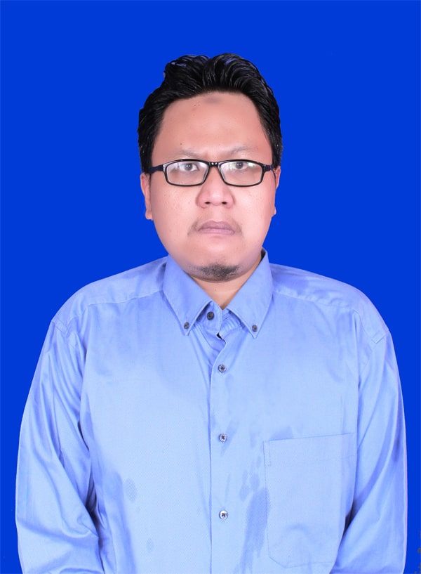
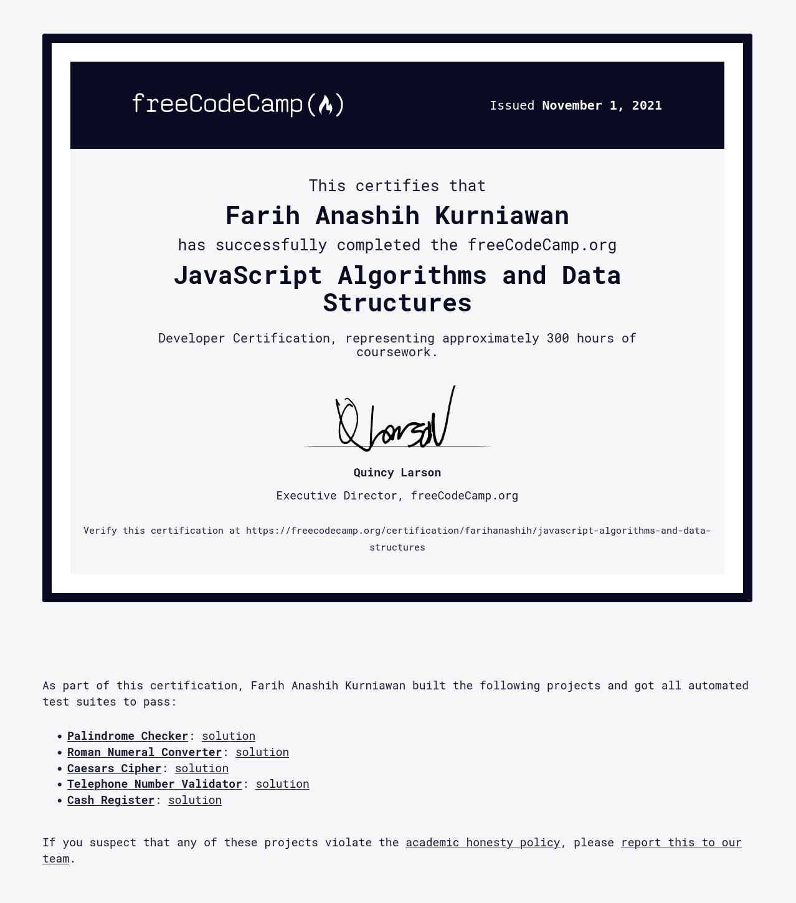

Background Color: #ffffff
Curiculum Vitae
 Front End Designer:
Nama saya Farih Anashih Kurniawan. Saya menyukai dunia komputer
dan selalu belajar untuk menambah wawasan. Umur saya 26 tahun dan tinggal di Cipayung,
Jakarta Timur. Kelebihan saya dalam bekerja adalah teliti dan memperhatikan detail pekerjaan.
Saya mungkin memiliki kekurangan dalam berkomunikasi dan bekerja dalam tim. Namun, saya akan
berusaha untuk belajar mengenai kamunikasi dengan orang lain demi menghasilkan pekerjaan
yang baik kedepannya. Dalam bekerja, saya tergolong orang yang memanfaatkan waktu dengan baik
dan saya juga menyelesaikan pekerjaan saya tepat waktu.
{kind=link}
Pengalaman Kerja
-
Baros, Cimahi Tengah
- Rumkit TK. II 03.05.01 Dustira
Operator SIMAK BMN- SIMAK BMN (Sistem Informasi Manajemen dan Akuntansi Barang Milik Negara)
- Dasar hukum PMK No. 181/PMK.06/2016 tentang Penatausahaan Barang Milik Negara
- Melaksanakan penginputan data Aset Tetap ke dalam Aplikasi Simak BMN
- Inventarisasi Aset Tetap
- Rekonsiliasi E-rekon (SIMAK dan SAIBA) setiap bulan, semester, dan tahunan
Februari 2018 - Mei 2021
Pendidikan
-
Margonda, Depok
- Universitas Gunadarma
Program S1 Ilmu Komputer dan Teknologi, Sistem Informasi- Pembuatan Game Kuis Pendidikan Agama ISlam untuk Siswa/Siswi Mts Kelas 3 Menggunakan Adobe Flash CS3
- Oracle: SQL and Extended SQL with Programming Feature
Ciracas, Jakarta Timur - MAN (Madrasah Aliyah Negeri) 15 Keterampilan Jakarta
Ilmu Sosial, Desain Grafis- Magang di percetakan selama satu bulan. (membuat kalender, kartu nama, sertifikat, dan lain-lain)
2012-2017
2009-2012
Sertifikat |
 |
|  |